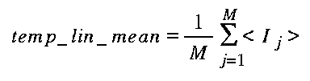

ANSI-C program: temp_lin_var.c
NAME
temp_lin_var - Estimate (linear) mean and weighted standard
deviation of co-registered data sets of format float.
SYNOPSIS
temp_lin_var <data_tab> <mean> <stdev>
<width> [waz] [wr] [wt_flag] [zero_flag] [loffset] [nlines]
[norm_pow]
| <data_tab> | single column list of the names of input data files (float) |
| <mean> | (output) temporal mean (linear scale) (float) |
| <stdev> | (output) temporal variability (stdev/pow(mean,norm_pow)) (float) |
| <width> | number of samples/row |
| [waz] | spatial averaging filter width in azimuth pixels (default = 1.0) |
| [wr] | spatial averaging filter width in range pixels (default = 1.0) |
| [wt_flag] | weighting function flag (weighting function (0:uniform (default) 1:linear 2:gaussian) |
| [zero_flag] | zero_flag (0: data value 0.0 interpreted as missing data (default)) |
| [loffset] | offset to starting line (default = 0) |
| [nlines] | number of lines to process (0:entire file (default)) |
| [norm_pow] | temporal stdev is normalized with
POW(mean,norm_pow) (0.0: normalized with 1.0, 1.0: normalized with backscatter intensity (default)) |
EXAMPLE
temp_log_var data_tab lin_mean lin_stdev 4912 9 9 1 0 0 500
1.0
The data_tab input file is a single column with the names of the 5 input data files:
14002.rmli
14503.rmli
15004.rmli
15505.rmli
16006.rmli
DESCRIPTION
temp_lin_var calculates
the temporal mean and normalized standard deviation of
multi-temporal, co-registered SAR intensity images, based on the
spatially averaged image values in linear scale.
The basic equations used to estimate the temporal mean and normalized standard deviation are:

where:
j= 1, ... ,M: file number
M: number of input files
Ij: Input intensity of image
j
temp_lin_mean: temporal mean (using linear
scale)
temp_lin_stdev: temporal normalized standard
deviation (using linear scale)
For the estimation of the spatial averages of the input intensity images a moving weighted averaging filter is used. The user can select between different weighting functions and indicate the filter window size in range and azimuth.
Null (0.0) values in the input file can either be interpreted as missing data (by setting zero_flag = 0), or as valid data values. There is the option to process a sub-section of the input data by indicating the ofset to the starting line (the default=0 indicates to start with the first data line) and number of lines to process.
For M registered input files temp_lin_var generates 1 mean and 1 normalized standard deviation output file. To produce M filtered output images use the program temp_filt. To calculate the temporal averaging and standard deviation based on the spacially averaged values (linear scale used in spatial averaging), in logarithmic (dB) scale, use the program temp_log_var In addition the program lin_comb has the facility to calculate linear combinations of M registered input files.
SEE ALSO
lin_comb, temp_lin_var, temp_log_var, typedef_ISP.h .